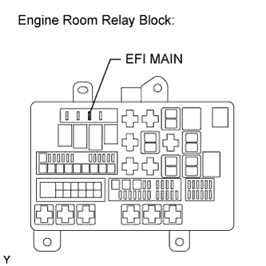

ECD SYSTEM > DTC CHECK / CLEAR |
| CHECK DTC (Using Intelligent Tester) |
Connect the intelligent tester to the DLC3.
Turn the engine switch on (IG).
Turn the tester on.
Enter the following menus: Powertrain / Engine / DTC.
Check the DTC(s) and freeze frame data, and then write them down.
Check the details of the DTC(s) (Click here).
| CLEAR DTC (Using Intelligent Tester) |
Connect the intelligent tester to the DLC3.
Turn the engine switch on (IG).
Turn the tester on.
Enter the following menus: Powertrain / Engine / DTC / Clear.
Press the YES button.
| CLEAR DTC (Without using Intelligent Tester) |
Perform either one of the following operations.
Disconnect the cable from the negative (-) battery terminal for more than 1 minute.
 |
Remove the EFI MAIN fuse from the engine room relay block (located inside the vehicle) for more than 1 minute.